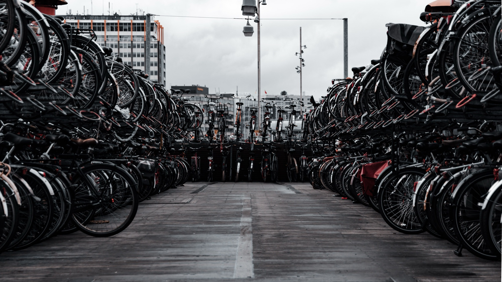
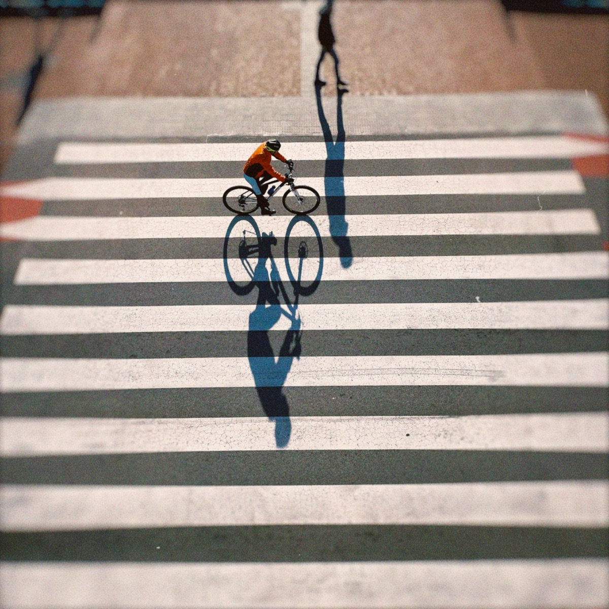
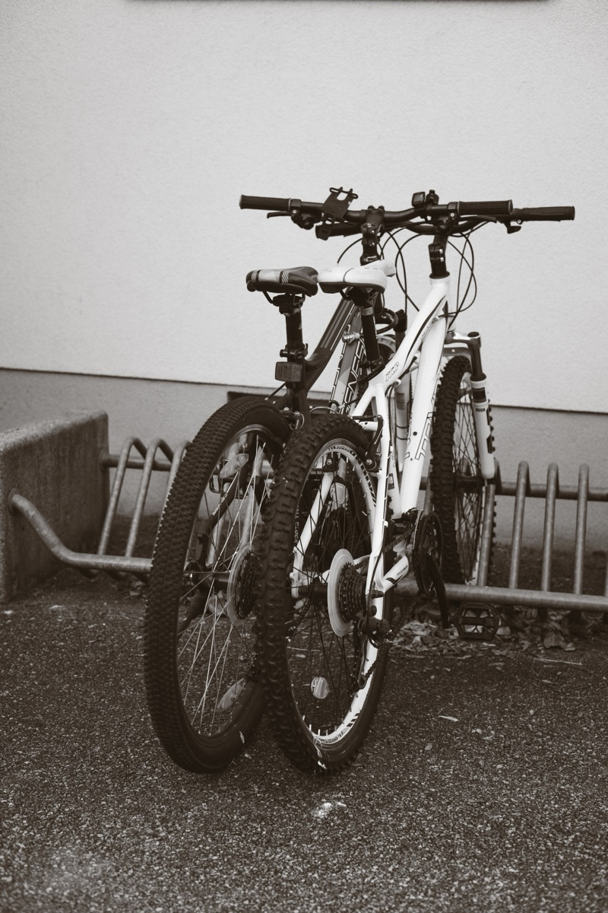
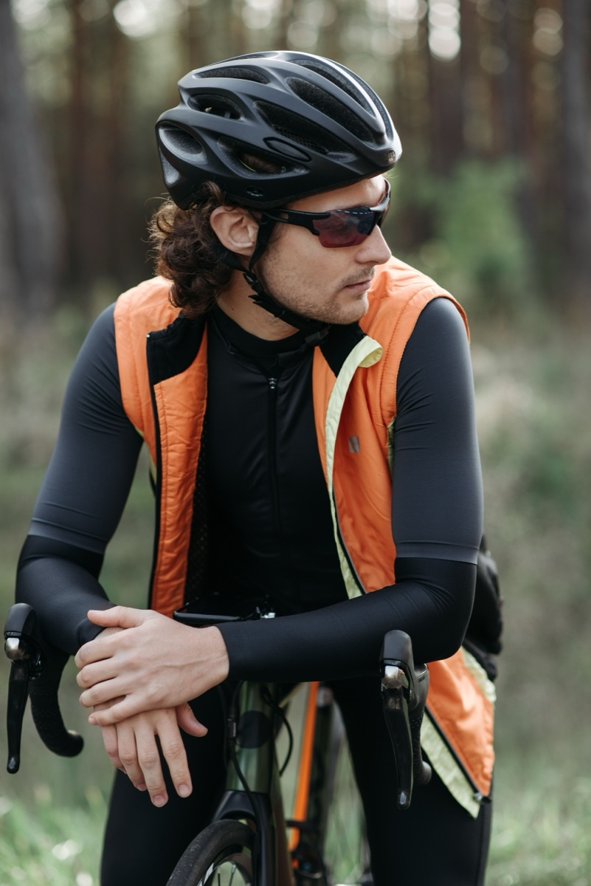

Brand assets
Preserved from the source project. Photography is Pexels-licensed (see provenance); icons are Lucide (ISC).
Wordmark
BikeNest
Imagery — assets/imagery/







Preserved from the source project. Photography is Pexels-licensed (see provenance); icons are Lucide (ISC).



